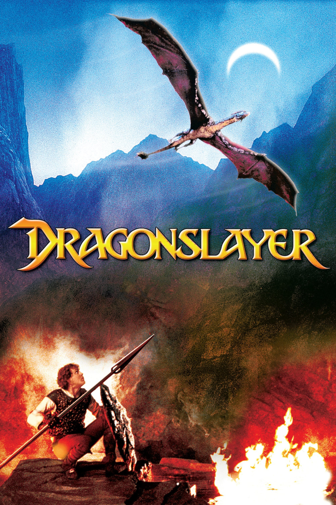

Мировая премьера: 26 июня 1981
Слоган: В тёмные времена драконы были частью реальности.
Сюжет: Во времена, когда все ещё верили в магию, безжалостный огнедышащий дракон наводил ужас на британские земли VI века. Единственной надеждой для отчаявшихся жителей был старый волшебник. Но когда он погиб, не успев спасти людей, эта задача легла на его юного ученика – Гилена. Миссия Гилена осложняется сопротивлением со стороны короля и внезапной влюблённостью, но самое трудное испытание ждёт его, когда он встретится лицом к лицу с устрашающим чудовищем.
Режиссёр: Мэттью Роббинс
В ролях: Питер МакНикол, Кэйтлин Кларк, Ральф Ричардсон
| Питер МакНикол | Гилен Брэдвордин |
| Кэйтлин Кларк | Валериан |
| Ральф Ричардсон | Ульрих |
| Джон Хэллам | Тириан |
| Питер Айр | Король Регис |
| Альберт Сэлми | Грейл |
| Сидни Бромли | Ходж |
| Хлоя Сэламен | Принцесса Элспес |
| Эмрис Джеймс | Отец Валериана |
| Роджер Кемп | Хорсрик |
| Иэн МакДайармид | Брат Джакопус |
Бюджет: $ 18 млн.
Кассовые сборы в США: $ 14 млн.
Кассовые сборы в мире: $ 14 млн.
Продолжительность: 1 ч. 46 мин.
Рейтинг: 6.6